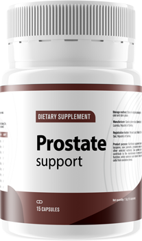
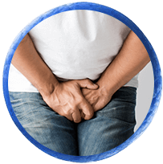
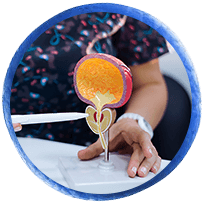
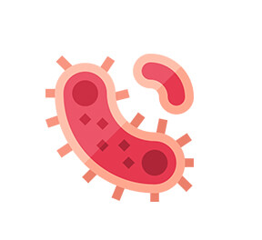
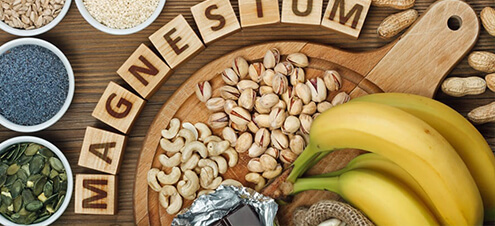
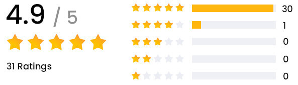
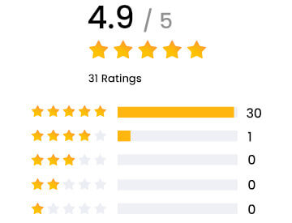

Mabilis na pagpapadala makakuha ng 50% na diskwento sa lahat ng order kapag nag-order ka sa susunod na 14 : 53 minuto

bumili na€
€
Pinapataas ang antas ng testosterone at pinipigilan ang pagbuo ng hindi normal na mga selula sa prostate. Ang Prostate Support ay isang makabagong solusyon para sa mga kalalakihang nagdurusa sa prostatitis. Ang natural na formula na ito ay tumutulong sa iyo na labanan ang mga sintomas ng prostatitis at mapabuti ang pangkalahatang kalusugan ng iyong prostate.
●Mabisang pinapabuti ang paggana ng prostate
●Nagbibigay ng proteksyon laban sa bakterya (antibacterial action)
●Pag-iwas sa pagbuo ng hindi normal na mga selula sa prostate at urinary tract
●Pinapanumbalik sa normal ang erectile function
●Inaalis ang pagod, nagbibigay ng lakas sa buong katawan, at nagpapalakas ng resistensya
bumili na"Napansin ko ang malaking pagbuti sa mga sintomas ng aking prostate sa loob lamang ng ilang araw ng paggamit ng Prostate Support. Ang kombinasyon ng Tribulus Terrestris at Magnesium Stearate sa formula ay isang natural at epektibong alternatibo sa mga inireresetang gamot."
"Ang prostatitis ay hindi lamang nagdulot sa akin ng patuloy na kakulangan sa ginhawa at sakit, kundi kinuha rin nito ang aking pagkalalaki. Pakiramdam ko ay nawawalan na ako ng kontrol sa aking sariling katawan. Tinulungan ako ng Prostate Support na mabawi ang kontrol at matugunan ang mga sintomas na ito sa natural na paraan. Pinabuti nito ang pangkalahatang kalusugan ng aking prostate at ibinalik ang aking pagkalalaki, na hindi nagawa ng anumang gamot."

Nagdurusa ka ba sa maagang labasan (premature ejaculation), erectile dysfunction, at mababang libido?
Palagi ka bang nakakaramdam ng pagod at kawalan ng lakas?

Nakakaranas ka ba ng sakit o kirot sa ibabang bahagi ng puson o sa ibabang bahagi ng likod?
Madalas ka bang umihi ngunit pakiramdam mo ay hindi tuluyang naiibis ang iyong pantog?
Gamitin ang mga natural na sangkap upang malunasan ang iyong mga problema sa prostate
Ang mga natural na sangkap na napatunayan na sa siyensya na may mga katangiang antibacterial, na lumalaban sa mga bakterya na sanhi ng prostatitis at nagpapabuti sa pangkalahatang kalusugan ng prostate.
Ang mga natural na sangkap sa Prostate Support ay naglayong magbigay ng pangkalahatang balanse sa prostate at urinary system, na tumutulong upang maiwasan ang hindi normal na paglaki ng mga selula.
Pinapabuti ng Prostate Support ang paggana ng prostate sa pamamagitan ng pagpapanumbalik ng normal na function nito gamit ang mga natural na sangkap, na nagreresulta sa mas maayos na daloy ng ihi, mas mabuting kalusugan ng prostate, at pangkalahatang kagalingan.
Ang mga natural na sangkap sa Prostate Support ay tumutugon sa mga sintomas ng prostatitis na nagdudulot ng erectile dysfunction, at sa pamamagitan ng pagpapanumbalik ng normal na paggana ng prostate, tumutulong ito sa pagbabalik ng normal na sekswal na kakayahan.
1 sa bawat 6 na lalaki ang nakakaranas ng prostatitis sa ilang bahagi ng kanilang buhay. Kung hindi ito gagamutin, maaari itong magdulot ng maraming seryosong komplikasyon na may malaking epekto sa kalidad ng buhay at pangkalahatang kalusugan ng isang lalaki.
Ang prostatitis ay maaaring magdulot ng kahirapan sa pagsisimula o paghinto ng pag-ihi, pakiramdam na hindi lubusang naiibis ang pantog, at madalas na pag-ihi, lalo na sa gabi.
Ang lumalaking prostate ay umiipit sa urethra, ang tubo kung saan lumalabas ang ihi mula sa pantog. Ito ay nagdudulot ng mahinang daloy ng ihi, pananakit habang umiihi, at kakulangan sa ginhawa.
Kung hindi maaagapan sa tamang oras, ang prostatitis ay maaaring magdulot dugo sa semilya, na maaaring maging tanda ng mas seryosong kondisyon habang lumalaki nang hindi normal ang prostate.
Ang pamamaga at sakit na dulot ng prostatitis ay maaaring makaapekto sa mga ugat at daluyan ng dugo na responsable sa ereksyon, na nagiging sanhi ng erectile dysfunction, pananakit, at kakulangan sa ginhawa sa bahagi ng pelvic.
Na nagpipigil sa pagbuo ng hindi normal na mga selula sa prostate at urinary tract, lumalaban sa mga bakterya na sanhi ng prostatitis, at nagpapabuti sa antas ng testosterone gamit ang napaka-epektibong natural na formula.
Ang Tribulus terrestris ay isang mabisang sangkap na botanikal na nagpapataas ng libido, nagpapalakas ng produksyon ng testosterone, at may positibong epekto sa urinary tract. May kakayahan itong suportahan ang kalusugan ng prostate at pagbutihin ang sekswal na kakayahan.
Tinutugunan ang mga sintomas ng lahat ng uri ng prostatitis, kabilang ang chronic prostatitis at acute bacterial prostatitis. Binabawasan nito ang pamamaga, pananakit, at pinapabuti ang pangkalahatang paggana ng prostate.
Tumutulong ito upang pataasin ang daloy ng dugo sa pelvic area, na nagpapabuti sa pangkalahatang sekswal na kakayahan at nagbabalik sa normal na estado ng erectile function.

Mayroon itong natural na antibacterial action, na tumutulong sa pag-iwas at pag-alis ng mga bakterya na nagiging sanhi ng prostatitis, nagpapabuti sa pangkalahatang kalusugan ng prostate, at nagpapalakas ng immune system.
Ang Tribulus Terrestris ay naglalaman ng mga phytochemical tulad ng saponins, flavonoids, at alkaloids, na napatunayang may anti-inflammatory, antibacterial, at antioxidant properties. Ang mga katangiang ito ay makakatulong upang mabawasan ang mga sintomas ng prostatitis sa pamamagitan ng pagbawas ng pamamaga sa prostate at pagpapabuti sa pangkalahatang kalusugan ng prostate gland. Pinapahusay din nito ang paggawa ng testosterone, na makakatulong sa pagpapabuti ng erectile function at pangkalahatang sekswal na kalusugan.

Ang mababang antas ng magnesium sa dugo ay nauugnay sa mas malalang problema sa prostate. Ang Magnesium Stearate ay tumutulong sa kalusugan at paggana ng prostate sa pamamagitan ng pagpuno ng mga antas ng magnesium sa katawan. Nakakatulong ito na mapabuti ang mga sintomas tulad ng kahirapan sa pag-ihi at mahinang daloy ng ihi, at sumusuporta sa normal na erectile function. Dahil mayroon itong antibacterial effect, makabuluhan nitong binabawasan ang pamamaga at pinipigilan ang pagbuo ng hindi normal na mga selula sa prostate.
"Talagang nagustuhan ko ang Prostate Support, talagang nakatulong ito sa akin na malunasan ang aking prostatitis!"
"Kumuha ako ng 3 bote at hindi ako nagsisisi. Ang produktong ito ay talagang nakatulong upang maibalik ang aking normal na buhay!"
Ang mga sagot sa pinakakaraniwang katanungan tungkol sa Prostate Support
Hindi. Ang Prostate Support ay available sa Cash on Delivery (COD). Magbabayad ka lamang kapag natanggap mo na ang produkto sa iyong pintuan — walang bayad nang maaga.
Ang delivery ay karaniwang 2 hanggang 5 araw ng trabaho pagkatapos ng kumpirmasyon ng order. Mabilis at discreet ang pagpapadala — walang nakasulat sa pakete kung ano ang nilalaman.
Oo. Ang Prostate Support ay gawa sa 100% natural na mga sangkap — Tribulus Terrestris at Magnesium Stearate — na walang napatunayang mapanganib na side effects. Dietary supplement ito, hindi gamot.
Oo. Mahigit 250 kalalakihan sa Pilipinas ang nagreport ng makabuluhang pagbabago sa loob ng ilang araw ng paggamit, kabilang ang pagpapabuti ng daloy ng ihi at erectile function. Tingnan ang mga review sa itaas.
Ang kasalukuyang presyo ay ₱1,950 lamang — 50% na diskwento mula sa orihinal na ₱3,900. Available ang Cash on Delivery sa buong Pilipinas at libre ang shipping.
Dating Presyo €
Bagong Presyo €

